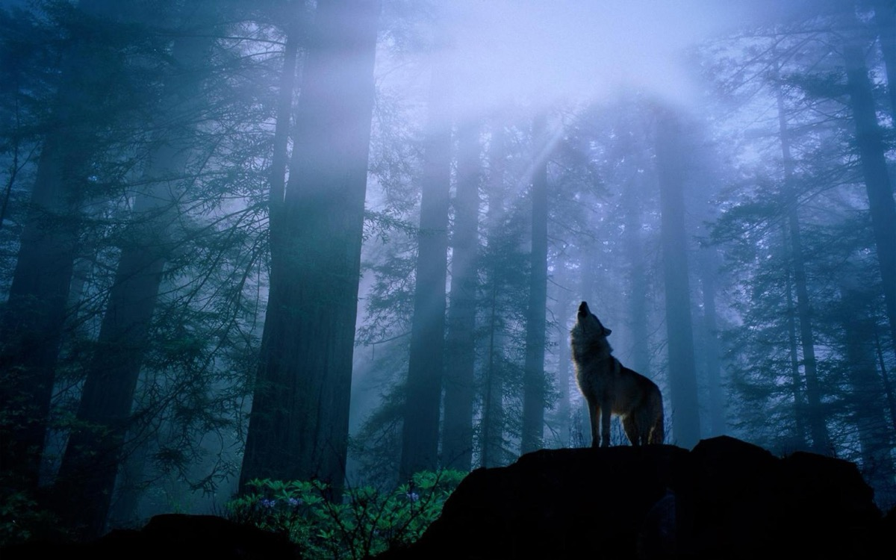

Lupii la stână
Nu, nu urlă el la lună
Este frig și ceață-afară
Urlă haita, se adună
La stână să dea năvală!
Singur a vrut să pătrundă
Însă nu a reușit
Câinii toți stăteau la pândă
Și pe loc i-au fugărit
Acum au venit în haită
Înrăiți și plini de foame
Câinii și-un vânător i-așteaptă
Să vezi bătălie, Doamne!
Foc de armă, lătrătură
Toți în luptă se aruncă
Lupii de sperietură
Au luat-o toți la fugă!
Vasile Groza